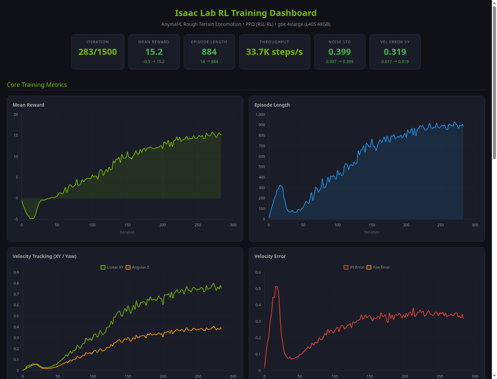
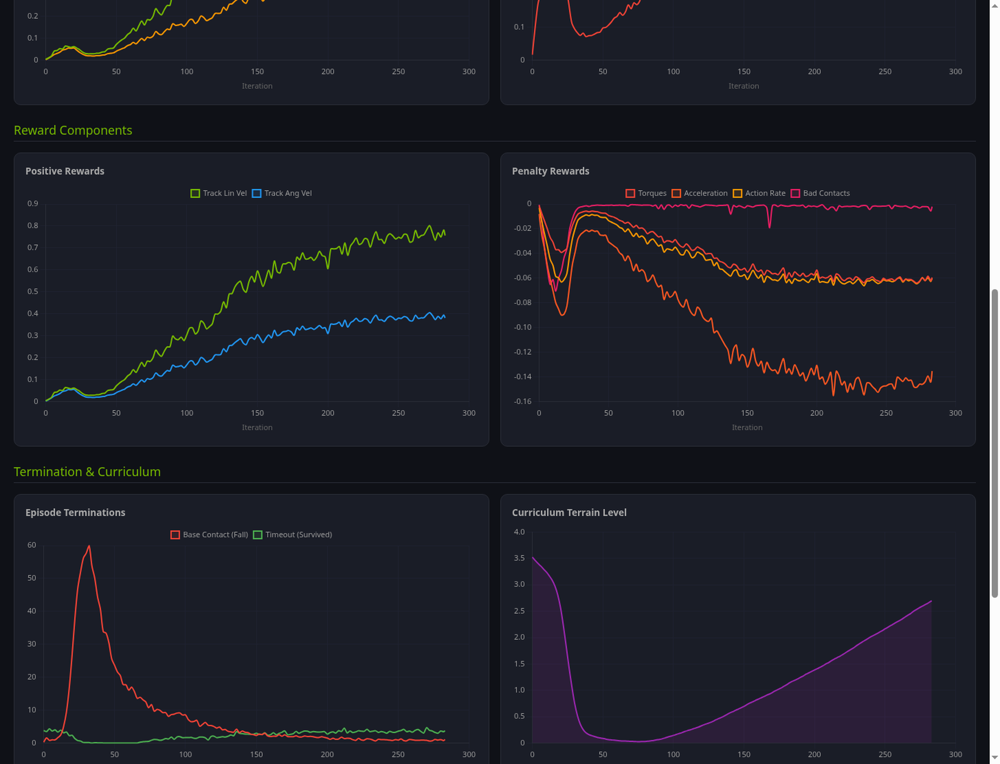
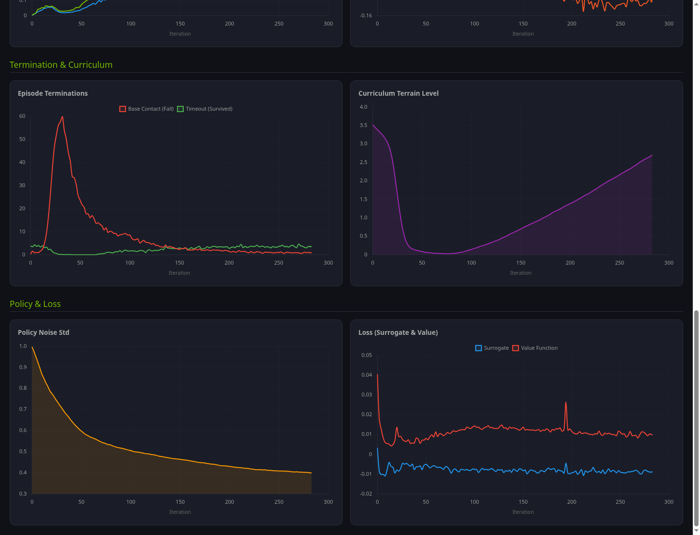
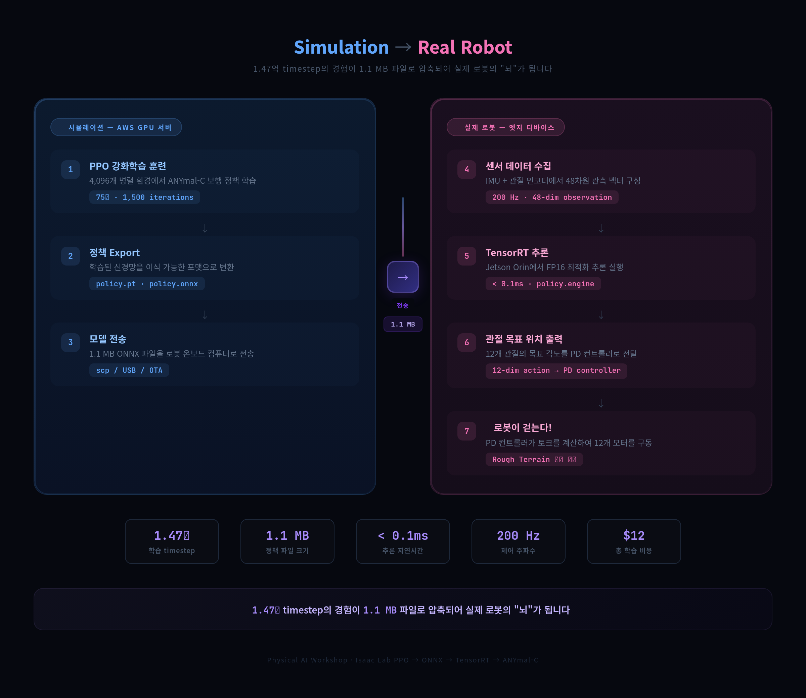
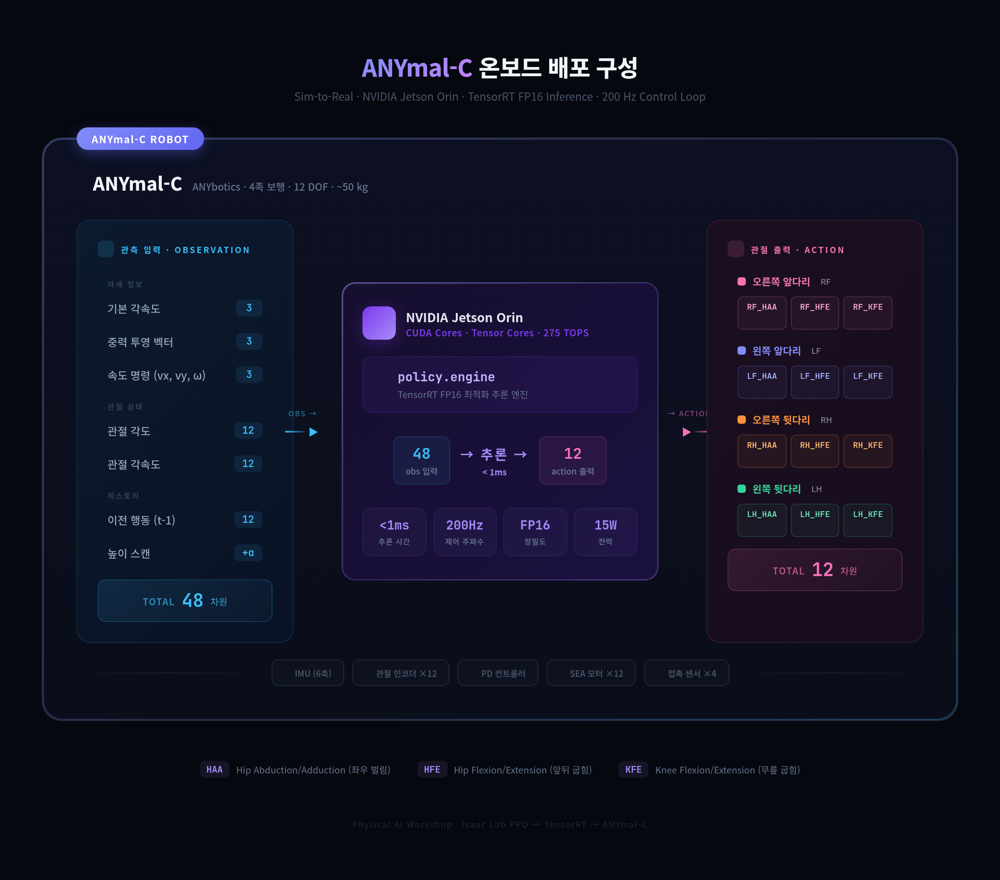

Physical AI Workshop
$12로 로봇 걷게 만들기
Isaac Lab + PPO로 ANYmal-C 4족 보행 로봇이
거친 지형에서 걷는 법을 학습하는 전체 과정
워크샵 구성
7개 Lab + 3개 Appendix · 총 170분
Lab 1 · Physical AI 핵심 개념 10분
RL 기초, PPO 알고리즘, Sim-to-Real 개념
Lab 2 · AWS GPU 인프라 구축 20분
Terraform으로 g6e.4xlarge 프로비저닝
Lab 3 · Docker 이미지 빌드 30분
Isaac Sim + Isaac Lab 컨테이너 구성
Lab 4 · PPO 강화학습 훈련 75분
4,096 환경 병렬 학습 실행
Lab 5 · 학습 결과 분석 15분
보상 곡선, 에피소드 길이, 지형 난이도
Lab 6 · Play 모드 & Export 10분
비디오 생성, JIT/ONNX 정책 export
Lab 7 · 정리 & 다음 단계 10분
terraform destroy, Sim-to-Real 로드맵
Appendix A·B·C
트러블슈팅 12선, 비용 분석, SW 버전
전체 아키텍처
Terraform → EC2 GPU → Isaac Lab Docker → PPO 학습 → Policy Export

AWS GPU 인프라
Terraform 한 줄로 전체 인프라를 코드로 구축
| 리소스 | 스펙 |
|---|---|
| 인스턴스 | g6e.4xlarge (16 vCPU, 64 GB) |
| GPU | NVIDIA L40S 48 GB VRAM |
| Root EBS | 300 GB gp3 (Docker 이미지) |
| Data EBS | 500 GB gp3 (체크포인트) |
| NVMe | Instance Store (캐시) |
| 모니터링 | CloudWatch GPU idle 자동 Stop |
terraform init
terraform plan
terraform apply
# SSH 접속
ssh -i key.pem ubuntu@$(
terraform output -raw public_ip
)
# 부팅 스크립트 확인 (15-25분)
tail -f /var/log/isaac-lab-setup.log
# "Isaac Lab setup COMPLETE"
Isaac Lab Docker 이미지
26.8 GB 컨테이너: Isaac Sim 4.5.0 + Isaac Lab v2.1.0 + RSL-RL
⚠️ 핵심 함정 3가지
- NGC에 Isaac Lab 이미지 없음 → 소스 빌드 필요
- 코어
isaaclab패키지 누락 → 수동 설치 - 기본 entrypoint가 스트리밍 모드 → 오버라이드 필수
✅ 빌드 3단계
docker compose --profile base buildpip install --no-build-isolation -e isaaclabdocker commit → isaac-lab-ready
docker compose --profile base build
# Step 2: 코어 패키지 + RL 라이브러리
docker run --name setup --gpus all \
--entrypoint bash isaac-lab-base \
-c 'pip install --no-build-isolation \
-e /workspace/isaaclab/source/isaaclab
&& ./isaaclab.sh -i rsl_rl'
# Step 3: 이미지 확정
docker commit setup isaac-lab-ready
PPO 강화학습 훈련
4,096 병렬 환경 · 1,500 iterations · 75분

학습 결과
보상 +16.29 · 지형 난이도 5.9/6.25 · VRAM 10/48 GB


Play 모드 & Policy Export
학습된 정책을 시각화하고, 실제 로봇용으로 변환

ANYmal-C rough terrain 보행 (30초 비디오)
| 산출물 | 크기 | 용도 |
|---|---|---|
| model_1499.pt | 6.6 MB | 학습 재개 / fine-tuning |
| policy.pt | 1.2 MB | C++ JIT 실시간 추론 |
| policy.onnx | 1.1 MB | TensorRT / Jetson 배포 |
| rl-video-*.mp4 | 2.8 MB | 시각적 검증 |
--entrypoint isaaclab.sh \
-p play.py \
--task Isaac-Velocity-Rough-Anymal-C-v0 \
--headless --video --video_length 1500
Sim-to-Real 파이프라인
시뮬레이션에서 학습한 "뇌"를 실제 로봇에 이식

ANYmal-C 온보드 배포 구성
48차원 관측 → Jetson Orin TensorRT 추론 → 12차원 관절 제어

실전 트러블슈팅 12선
공식 문서에 없는 실전 함정과 해결법
| # | 함정 | 심각도 |
|---|---|---|
| 1 | dpkg lock 경합 | 🟡 |
| 2 | EBS 디바이스 이름 (Nitro) | 🟡 |
| 3 | Instance store 이미 마운트 | 🟡 |
| 4 | Terraform templatefile 충돌 | 🟡 |
| 5 | user_data 재실행 안 됨 | 🟢 |
| 6 | Isaac Lab NGC 이미지 없음 | 🔴 |
| # | 함정 | 심각도 |
|---|---|---|
| 7 | 코어 isaaclab 패키지 누락 | 🔴 |
| 8 | Docker entrypoint 스트리밍 모드 | 🔴 |
| 9 | 훈련 스크립트 경로 변경 | 🟡 |
| 10 | setuptools 빌드 격리 | 🔴 |
| 11 | Volume mount → editable 파괴 | 🟡 |
| 12 | 셰이더 캐시 첫 실행 지연 | 🟢 |
비용 분석
클라우드 GPU로 로봇 AI를 학습하는 실제 비용
이번 실습
g6e.4xlarge On-Demand
Seoul 리전 · 4시간
비용 최적화
g6e.4xlarge Spot
Virginia 리전
대규모
g6e.12xlarge Spot (4×L40S)
Virginia 리전
이번 워크샵에서 달성한 것
- Terraform으로 AWS GPU 인프라를 코드로 구축
- Isaac Sim + Isaac Lab Docker 이미지 빌드 (26.8 GB)
- 4,096개 병렬 환경에서 PPO 강화학습 실행
- 75분 만에 1.47억 timestep 학습 완료
- ANYmal-C가 rough terrain에서 안정적으로 보행
- 학습된 정책을 JIT / ONNX로 export (sim-to-real 준비)
- 총 비용: ~$12 (₩16,000)
감사합니다
$12로 4족 보행 로봇이 걷는 법을 배웠습니다